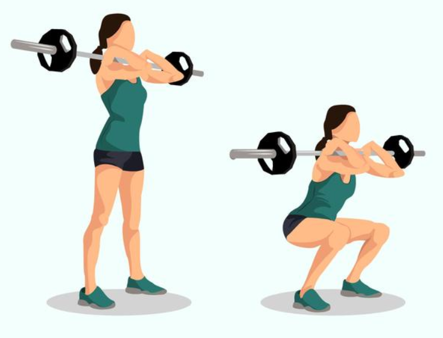
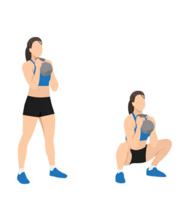
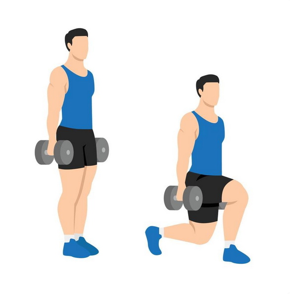
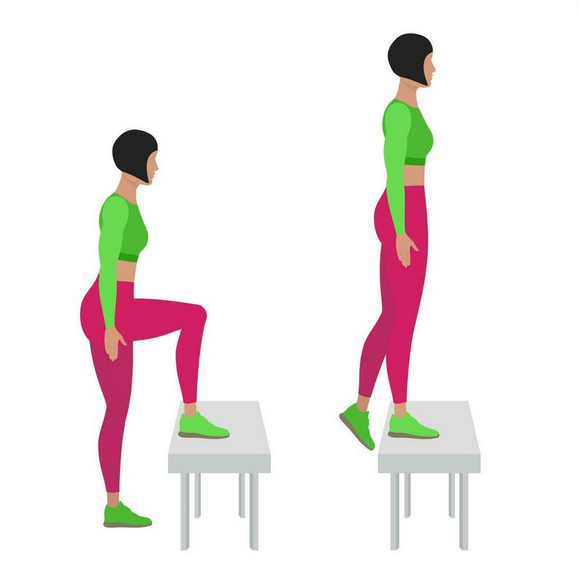
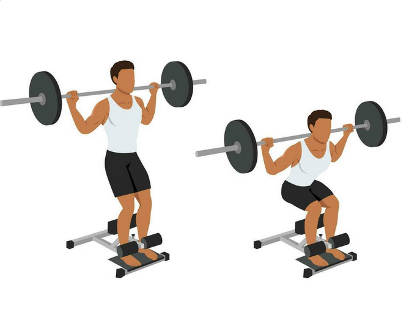
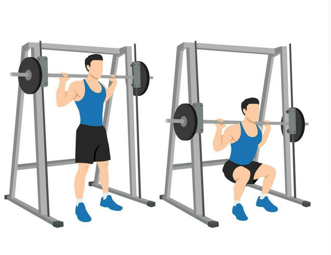
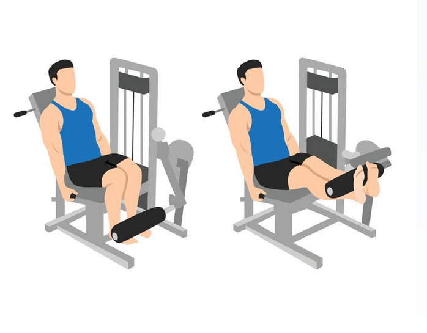

Without Equipment
-

Front Squats
Back squats get all the press, but by shifting the weight onto the front of our bodies (with either a bar or dumbbells), we can put a greater emphasis on the quadriceps. Switching from back to front is the quickest change you can make to your training to start seeing quad growth.
-

Dumbbell Goblet Squat
The dumbbell goblet squat is a variation of the squat and an exercise used to build the muscles of the legs. In particular, the dumbbell goblet squat will place a lot of emphasis on the quads.
-

Dumbell Rear Lunge
The dumbbell reverse lunge is a dumbbell lunge variation and an exercise used to target the muscles of the quads, as well as the rest of the muscles of the leg.
-

Bodyweight Step-Up
The step up is an exercise used to strengthen the muscle of the leg. In particular, step ups focuses on building the quads, but also indirectly targets the hamstrings, glutes, calves, and core.
With Equipment
-
Seated Dumbbell Leg Extensions
Isolating the muscles of the quads can be difficult without specific machinery, but by simply holding a dumbbell between your feet whilst siting on a box or a bench you’re able to work solely on ‘knee extension’, the primary function of the quadriceps. High rep sets are a great finisher after squats and lunges for maximum growth.

-

Barbell Sissy Squat
Sissy squats primarily strengthen the quadriceps and also work the hip flexors, core strength and can improve balance. With a sissy squat machine, you're able to lean back securely without fear of falling over or disrupting your posture.
-
Leg Press
Specifically, the leg press targets the quadriceps muscles in the front of the thighs, the gluteal muscles in the buttocks, the hamstring muscles in the back of the thighs, and the calves, all in an integrated fashion

-

Smith Machine Barbell Squat
The Smith machine is an effective way to increase strength and build muscle. While it won't prevent all exercise-related injuries, Smith machines can help increase the safety and stability of weight training sessions. It's a good option for those who want to do variations of basic weightlifting exercises, such as hack squats and single-leg deadlifts
-

Leg Extensions
Leg extensions focus the tension on just your quadriceps. This is the only leg exercise that targets your quadriceps without involving other muscles. Other leg exercises, such as squats, step-ups and leg presses, work the quadriceps, but the hamstrings, calves or glute muscles assist the during the movement.